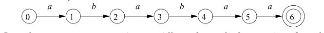

3.4 Recognition of Tokens
NOTE: This chapter describes conversion from regular-expression patterns to transition diagrams by hand, which is intended to help reader to understand the finite automaton(finite state machine) widely used in engineering described in section 3.5. In essence, a transition diagram is a visual representation of a finite state machine.
In the previous section we learned how to express patterns using regular expressions. Now, we must study how to take the patterns for all the needed tokens and build a piece of code that examines the input string and finds a prefix that is a lexeme matching one of the patterns. Our discussion will make use of the following running example. $$ \begin{align}
stmt \to if \; expr \; then \; stmt \ | if \; expr \; then \; stmt \; else \; stmt \ | ? \ expr \to term \; relop \; term \ | term \ term \to id \ | number \end{align} $$ Figure 3.10: A grammar for branching statements
Aho-Corasick algorithm
NOTE: The main content of this chapter is passed, but in the exercise, the author introduce Aho-Corasick algorithm and KMP algorithm which are interesting.
The following exercises, up to Exercise 3.4.12, introduce the Aho-Corasick algorithm for recognizing a collection of keywords in a text string in time proportional to the length of the text and the sum of the length of the keywords. This algorithm uses a special form of transition diagram called a trie. A trie is a tree-structured transition diagram with distinct labels on the edges leading from a node to its children. Leaves of the trie represent recognized keywords.
NOTE: A trie is a tree-structured transition diagram or finite automaton, do you see the power of tree structure here as I do
Knuth, Morris, and Pratt presented an algorithm for recognizing a single keyword b_1 b_2 \dots b_n(length of the word is n) in a text string. Here the trie is a transition diagram with n+ 1 states, 0 through n. State 0 is the initial state, and state n represents acceptance, that is, discovery of the keyword. From each state s from 0 through n - 1, there is a transition to state s + 1, labeled by symbol b_{s+1} . For example, the trie for the keyword ababaa is:

In order to process text strings rapidly and search those strings for a keyword, it is useful to define, for keyword b_1 b_2 \dots b_n and position s in that keyword (corresponding to state s of its trie), a failure function, f(s), computed as in Fig. 3.19. The objective is that b_1 b_2 \dots b_{f(s)} is the longest proper prefix of b_1 b_2 \dots b_s that is also a suffix of b_1 b_2 \dots b_s. The reason f (s) is important is that if we are trying to match a text string for b_1 b_2 \dots b_n, and we have matched the first s positions, but we then fail (i.e., the next position of the text string does not hold b_{s+1} ), then f (s) is the longest prefix of b_1 b_2 \dots b_n that could possibly match the text string up to the point we are at. Of course, the next character of the text string must be b_{f (s)+1}, or else we still have problems and must consider a yet shorter prefix, which will be b_{f (f (s))}.
t = 0;
f (1) = 0;
for (s = 1; s < n; s + +) f
while (t > 0 && b[s+1] ! = b[t+1]) t = f (t);
if (b[s+1] == b[t+1]) {
t = t + 1;
f (s + 1) = t;
}
else f (s + 1) = 0;
}
Figure 3.19: Algorithm to compute the failure function for keyword b_1 b_2 \dots b_n
As an example, the failure function for the trie constructed above for ababaa is:
| s | 1 | 2 | 3 | 4 | 5 | 6 |
| f(s) | 0 | 0 | 1 | 2 | 3 | 1 |
For instance, states 3 and 1 represent prefixes aba and a, respectively. f (3) = 1 because a is the longest proper prefix of aba that is also a suffix of aba. Also, f (2) = 0, because the longest proper prefix of ab that is also a suffix is the empty string.
Aho and Corasick generalized the KMP algorithm to recognize any of a set of keywords in a text string. In this case, the trie is a true tree, with branching from the root. There is one state for every string that is a prefix (not necessarily proper) of any keyword. The parent of a state corresponding to string b_1 b_2 \dots b_n is the state that corresponds to b_1 b_2 \dots b_k. A state is accepting if it corresponds to a complete keyword. For example, Fig. 3.21 shows the trie for the keywords he, she, his, and hers.